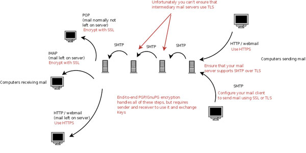
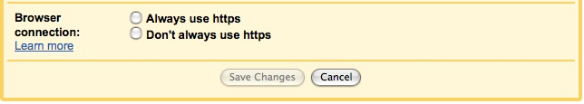
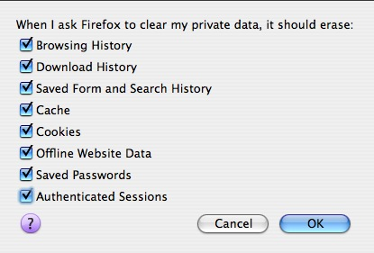
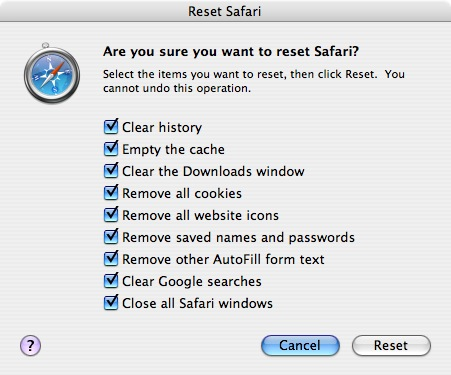
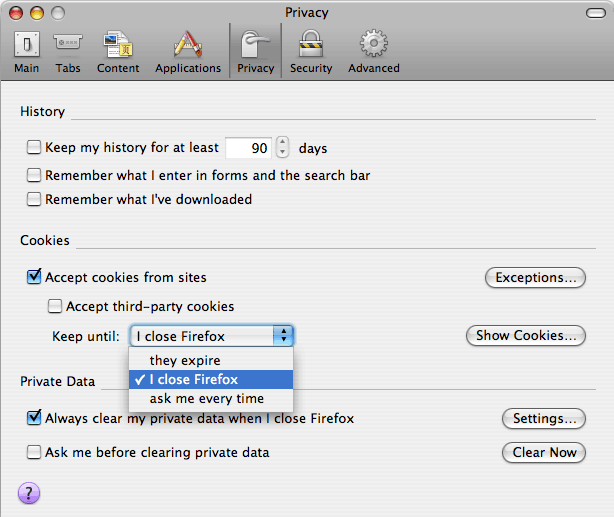

Defensive Technology¶
Defensive Technology¶
If you are looking for basic technical information on how to protect the privacy of your data — whether it’s on your own computer, on the wire, or in the hands of a third party — you’ve come to the right place. Although we hope you’ll have the time to review all of the information in the SSD guide, if you’re in a hurry to get to the technical details, this is where you can read articles that will explain:
- the basics of the relevant technologies, such as the Internet Basics and Encryption Basics articles
- how to improve the security of different communication applications, such as your web browsers, email systems and IM clients
- how to protect your privacy by using defensive technologies such as Secure Deletion software, File and Disk Encryption software, and virtual private networks
- the overarching security threat posed by malware_SSD, how to evaluate that threat, and how to reduce it
Just remember: technology changes quickly. We’ll be doing our best to keep these articles updated to reflect current developments, but in the meantime, you should take the time to review information from multiple sources before making any serious security decisions.
Email¶
The act of using email stores data on your machines, transmits data over the network, and stores data on third party machines.
Locally Stored Data¶
The usual measures apply to managing the copies of emails (both sent and received) that are kept on your own machines. Encrypt your drives and decide upon and follow an appropriate data deletion policy.
Data on the Wire¶
Email usually travels through a number of separate hops between the sender and receiver. This diagram illustrates the typical steps messages might travel through, the transmission protocols used for those steps, and the available types of encryption for those steps. 
{kind=link}
End-to-End Encryption of Specific Emails¶
Encrypting emails all the way from the sender to the receiver has historically been difficult, although the tools for achieving this kind of end-to-end encryption are getting better and easier to use. Pretty Good Privacy (PGP) and its free cousin GNU Privacy Guard (GnuPG) are the standard tools for doing this. Both of these programs can provide protection for your email in transit and also protect your stored data. Major email clients such as Microsoft Outlook and Mozilla Thunderbird can be configured to work smoothly with encryption software, making it a simple matter of clicking a button to sign, verify, encrypt and decrypt email messages. The great thing about end-to-end encryption is that it ensures that the contents of your emails will be protected not only against interception on the wire, but also against some of the threats to the contents of copies of your emails stored on your machine or third party machines. There are two catches with GnuPG/PGP. The first is that they only work if the other parties you are corresponding with also use them. Inevitably, many of the people you exchange email with will not use GPG/PGP, though it can be deployed amongst your friends or within an organization.
The second catch is that you need to find and verify public keys for the people you are sending email to, to ensure that eavesdroppers cannot trick you into using the wrong key. This trickery is known as a “man in the middle” attack. Probably the easiest way to start using GnuPG is to use Mozilla Thunderbird with the Enigmail plugin. You can find the quick start guide for installing and configuring Enigmail Enigmal_Quickstart.
Server-to-Server Encrypted Transit¶
After you press “send”, emails are typically relayed along a chain of SMTP mail servers before reaching their destination. You can use your mail client to look at the headers of any email you’ve received to see the chain of servers the message traveled along. In most cases, messages are passed between mail servers without encryption. But there is a standard called SMTP over TLS which allows encryption when the sending and receiving servers for a given hop of the chain support it. If you or your organization operates a mail server, you should ensure that it supports TLS encryption when talking to other mail servers. Consult the documentation for your SMTP server software to find out how to enable TLS.
Client-to-Mail Server Encryption¶
If you use POP or IMAP to fetch your email, make sure it is encrypted POP or IMAP. If your mail server doesn’t support the encrypted version of that protocol, get your service provider or systems administrator to fix that. If you use a webmail service, ensure that you only access it using HTTPS rather than HTTP. Hushmail.com is a webmail service provider that always uses HTTPS, and also offers some end-to-end encryption facilities (though they are not immune to warrants).
Many webmail service providers only use HTTPS for the login page, and then revert to HTTP. This isn’t secure. Look for an account configuration option (or a browser plugin) to ensure that your webmail account always uses HTTPS. In Gmail, for instance, you can find this option in the “general” tab of the settings page:  If you can’t find a way to ensure that you only see your webmail through https, switch to a different web mail provider.
Data Stored on Second- and Third-Party Machines¶
There are two main reasons why your emails will be stored on computers controlled by third parties.
Storage by your Service Provider¶
If you don’t run your own mail server, then there is a third party who obtains (and may store) copies of all of your emails. This would commonly be an ISP, an employer, or a webmail provider. Copies of messages will also be scattered across computers controlled by the ISPs, employers and webmail hosts of those you correspond with. Make sure your email software is configured so that it deletes messages off of your ISP’s mail server after it downloads them. This is the most common arrangement if you’re using POP to fetch your email, but it is common for people to use IMAP or webmail to leave copies of messages on the server. If you use webmail or IMAP, make sure you delete messages immediately after you read them. Keep in mind that with major webmail services, it may be a long time – maybe a matter of months – before the message is really deleted, regardless of whether you still have access to it or not. With smaller IMAP or webmail servers, it is possible that forensically accessible copies of messages could be subpoenaed years after the user deleted them.
The content of PGP/GnuPG encrypted emails will not be accessible through these third parties, although the email headers (such as the To: and Subject: lines) will be. Running your own mail server with an encrypted drive, or using end-to-end encryption for sensitive communications, are the best ways of mitigating these risks.
Storage by Those You Correspond With¶
Most people and organizations save all of the email they send and receive. Therefore, almost every email you send and receive will be stored in at least one other place, regardless of the practices and procedures you follow. In addition to the personal machine of the person you sent/received the message to/from, copies might be made on their ISP or firm’s mail or backup servers. You should take these copies into consideration, and if the threat model you have for sensitive communications includes an adversary that might gain access to those copies, then you should either use PGP to encrypt those messages, or send them by some means other than email. Be aware that even if you use PGP, those you communicate with could be subject to subpoenas or requests from law enforcement to decrypt your correspondence.
End-to-End Email Encryption¶
Email encryption is a topic that could fill a book, and has: see Bruce Schneier’s book Email Security: How to Keep Your Electronic Messages Private. While this book is somewhat out of date (it refers to old versions of software), the concepts it introduces are essential.
Encryption Basics¶
Encryption is a technique that uses math to transform information in a way that makes it unreadable to anyone except those with special knowledge, usually referred to as a “key.” There are many applications of encryption, but some of the most important uses help protect the security and privacy of files on your computer, information passing over the Internet, or left sitting in a file on someone else’s computer. If encryption is used properly, the information should only be readable by you and people that receive the key from you. Encryption provides a very strong technical protection against many kinds of threats — and this protection is often easy to obtain.
How Does Encryption Work?¶
What do you need to know about how encryption works? Surprisingly little. Encryption is conceptually similar to the “secret codes” that children learn about and use to communicate. If you’ve ever spoken in pig Latin or used a decoder ring, you’ve used very simple encryption techniques on a message. Again, the idea is to take a normal human-readable message (often called the plaintext message) and transform it into an incomprehensible format that can only become comprehensible again to someone with secret knowledge:
Plaintext message + Encryption algorithm + Key = Scrambled message
Decryption algorithm + Key + Scrambled message = Plaintext Message
Your Little Brother’s Cryptography. A simple encryption system would be to change each letter in your message to a set number of letters later in the alphabet. The specific number of spaces you move down the alphabet for each letter is the secret key. If the key is two, A becomes C, B becomes D, C becomes E, etc. Using that encryption system, the plaintext message “INSECURE” would become “KPUGEWTG.”
How is Encryption Applied?¶
Although the mechanics of encryption can be explained by the “decoder ring” analogy, the modern practice of using encryption has been accurately described as using a very resilient envelope for your messages. Most unencrypted data transmitted online is accessible to the servers passing off the information. Conversely, using encryption puts your online communications in a “steel envelope” — they can’t be read in the course of delivering the message to the recipient and are extremely resistant to tampering.
Modern encryption is very difficult to break, using very complex mathematics to scramble information and ensure that only people possessing the right key can unscramble it. In many cases you can get major security benefits from encryption without a detailed understanding of how it works. Some software implements very convenient, fully automated encryption features which may simply require that you turn them on.
For instance, when a website is configured properly, web browsers can use SSL encryption to protect the privacy of information you send to or receive from a web server. This is most often used to protect log-in passwords and financial data. Using a browser’s SSL encryption can be as simple as accessing a site with the https scheme instead of the http scheme (for instance, https://www.eff.org/instead of http://www.eff.org/); the browser typically takes care of all the details behind the scenes.
Why Is Encryption Important?¶
Encryption plays an important role in mitigating risk related to the many threats listed in this guide. If sensitive information stored on your computer is encrypted, it will take a secret key to decode it. If sensitive information en route to others is encrypted, only someone that knows the secret key can read what it says. When you encrypt sensitive information and it ends up logged by others in the course of communicating online, encryption keeps those without the secret key from knowing the contents of the message.
Most of the Defensive Technology articles in this guide will cover practical ways to apply encryption to particular communications (like email) or particular applications (like web browsers).
Encryption is absolutely essential to maintaining information security. Moreover, modern computers are powerful enough that we can aim to make encryption of our communications and data routine, not just reserving encryption for special occasions or particularly sensitive information.
For More About Encryption¶
Many encryption tools can be used successfully without much beyond a conceptual understanding. We explain how to use many of these well-developed tools in other parts of this guide.
However, be aware that while encryption is a powerful tool and is critical to information security, it has limitations — particularly if it is not being used correctly. Learning more about encryption and its limitations can help ensure that you’re using it properly and getting protection against as many kinds of attacks as possible.
File and Disk Encryption¶
Modern operating systems allow you to use a system of accounts and passwords to limit access to data on a computer. This may be useful when adversaries have casual passing access to your machine, but those accounts and passwords will not protect your data if your computer is stolen or seized — or if the adversaries have more than a minute or two alone with your computer. There are many ways (such as plugging your hard disk into another computer, or booting another operating system using a CD or USB key) that would allow files to be read off the disk. Even deleted files may be recoverable.
The theft or seizure threats can be mitigated by encrypting the data on the disk. Some sort of mitigation is especially important for laptops, which are at high risk of being lost or stolen, but the same measures can be useful for improving the security of any client or workstation-type computer.
Full-disk encryption is meant to protect stored data against this sort of exposure, if the computer is stolen or seized when it is powered off. If the computer is seized while running, there are tricks that sophisticated adversaries could use to read the data regardless of encryption.
File encryption is disk encryption that only applies to certain specific files on your computer. It may be easier to deploy but is vulnerable to several threats that do not apply to full disk encryption.
Hard disk passwords are a feature offered by many laptop manufacturers. These can be enabled within the BIOS of your computer. Hard disk passwords don’t encrypt any data on your drive, they just prevent the drive from cooperating with the computer until the password is supplied. There are numerous commercial services which will disable these passwords for about $100 per drive. So a hard disk password is useful against a casual thief, but of no use against law enforcement or other non-casual adversaries.
Should I Encrypt My Drive?¶
Everybody should use either disk encryption or a hard disk password (possibly augmented with file encryption) on their laptops. If your laptop has personal data but you would not regard any of it as sensitive, a hard disk password may be quick and easy, and sufficient protection in case of theft.
If your computer contains a very small and easily quantified set of somewhat sensitive documents, it may be sufficient to use file encryption for those documents, alongside a hard disk password.
If you computer contains a larger (or harder to quantify) set of sensitive documents, or any documents which might be considered highly sensitive, it is best to use full disk encryption. In such cases the threat posed by Malware_Tech should also be taken into account.
Disk Encryption Is Of Little Use in Civil Lawsuits¶
It is extremely important to note that disk encryption is unlikely to offer much protection against civil litigation. Many of the procedural obstacles which might apply to law enforcement attempts to obtain encrypted data during a criminal investigation would not apply in a civil case. If an adversary in a civil case persuades a judge to issue a subpoena for your data, a failure to decrypt and disclose the data would be held against you in the case.
If your threat model involves civil litigation, it is essential to simply not have the data on a computer in the first place, or to have Secure Deletion practices in place long before any lawsuit is filed. Once a lawsuit is filed, you will be obliged to preserve any pertinent documents, and the presence of forensic evidence that you deleted data after a suit was filed would have dire consequences.
Choosing Disk Encryption Software¶
There are many full-disk encryption tools. Using a mainstream one is probably safer than an obscure one, since mainstream disk encryption products have usually received more expert review. Leading disk encryption programs include BitLocker, PGPDisk, FileVault, TrueCrypt, and dm-crypt (LUKS); some of these come with the operating system, while others are third-party add-ons. You can read a detailed comparison of these and many other disk encryption products from a comparison at Wikipedia. This comparison may help you select a disk encryption product to meet your needs, but any of these systems can protect your data better than having no disk encryption at all.
Things To Know When Using Disk Encryption¶
Generally, disk encryption software will require you to enter a separate disk password when you turn the computer on or start using the disk (some systems can use a smartcard instead of or in addition to a password). To be effective, this password must be resistant to all forms of automated guessing. Remember that the disk encryption is fully effective at preventing access to the disk when the computer is turned off (or the encrypted disk is entirely unmounted or removed from use); to get the full benefit, you should unmount the encrypted disk or turn the computer off in any situation where the risk of compromise is especially high, such as a computer left unattended overnight or a laptop being carried from place to place. (Using disk encryption without following this precaution scrupulously will still provide more protection against some attackers than not using disk encryption.)
Finally, full-disk encryption can also be used on servers, providing some protection against seizure of the servers. However, even servers with encrypted hard drives could be vulnerable to attackers with specialized techniques if they’re seized while they’re operating. Proper use of disk encryption on servers can also be a nuisance because the server can’t do a fully unattended automatic reboot. (It’s not safe to store the password for the disk on the server itself, so an administrator will have to enter the disk password whenever the computer is restarted.)
Plausible Deniability¶
One interesting property which some disk encryption developers are working towards is plausible deniability. The goal of these efforts is to offer users a way to not only encrypt their files, but to prevent an attacker from being able to even deduce the existence of some of the encrypted files. The user will have a way to “plausibly deny” that the files exist.
One example of this concept is TrueCrypt’s ability to have an encrypted partition (which can be hidden as any file on your hard drive) and within that partition hide another partition. One password will reveal the outer partition and another separate password will reveal the inner one. Because of the way TrueCrypt encrypts the partition table itself, an observer cannot detect a hidden partition even if she has access to the “regular” encrypted share. The idea is to give the user something to decrypt if a law enforcement officer or Customs official asks, while keeping the rest of their information secure.
In practice, TrueCrypt’s first attempt to implement this feature was shown to be ineffective because operating systems and applications leave so many traces of the files they work with, that a forensic investigator would have many avenues by which to determine that the inner partition existed. The TrueCrypt developers have responded to this research by offering a way to install and boot from an entire separate operating system within the inner partition. It is too soon to know whether their new approach will turn out to offer secure plausible deniability.
Technical issues aside, remember that lying to a federal law enforcement officer about material facts is a crime, so if a person chose to answer a question about whether there were additional encrypted partitions on a computer, they would be legally obligated to answer truthfully.
Instant Messaging¶
Instant messaging is a convenient way to communicate with people online. In privacy terms, it’s a bit better and easier to secure than email but in some situations a telephone call will offer you better privacy.¶
Instant messaging software creates data stored on your computer (logs of your communications), transmits communications over the network (the messages traveling back and forth), and leaves communications stored on other computers (logs kept by the people you talk to, and sometimes logs kept by the IM provider). If you use IM without taking special precautions, you can assume that all of these records will be available to adversaries. The easiest way for an adversary to obtain the contents of your communications is from you, your correspondent, or your service provider, if any of those parties logs (stores) the messages. The more difficult way is to intercept the messages as they travel over the network.
Encrypt Your Instant Messaging Conversations as They Travel¶
To protect messages from interception as they travel over the network, you need to use encryption. Fortunately, there is an excellent instant messaging encryption system called OTR (Off The Record).Confusingly, Google has a **different* instant messaging privacy feature which is also called “Off The Record”.* To disambiguate them, this page will talk bout “OTR encryption” and “Google OTR”. It’s actually possible to be using them both at the same time. If you and the person you are talking to both use OTR encryption, you have excellent protection for communications on the network, and you will prevent your IM provider from storing the content of your communications (though they may still keep records of who you talk to). The easiest way to use OTR encryption is to use Pidgin or Adium for your IMs (Pidgin is a program that will talk to your friends over the MSN, Yahoo!, Google, Jabber, and AIM networks; Adium is a similar program specifically for Mac OS X). If you’re using Pidgin, install the the OTR encryption plugin for that client. Adium comes with OTR built in.
With OTR encryption installed, you still need to do a few things for network privacy:
- Read and understand OTR encryptions’s information.
- Make sure the people you are talking to also use OTR encryption, and make sure it’s active. (In Pidgin, check for OTR:private or OTR:unverfied in the bottom right corner.)
- Follow OTR encryption’s instructions to “Confirm” any person you need to have sensitive conversations with. This reduces the risk of an interloper (including the government with a warrant) being able to trick you into talking to them instead of the person you meant to talk to. Recent versions of OTR encryption allow you to do this just by agreeing on a shared secret word that you both have to type (“what was the name of the friend who introduced us?”). Older versions required that both users check that their client reported the right fingerprint for the other client.
Configure Your IM Client to use SSL/TLS¶
This step is complementary to using OTR encryption. It will prevent someone watching the network from seeing who you are chatting to, and will offer partial protection of your chats even if the other party isn’t using OTR. If you are using Pidgin, you can ensure SSL is enabled by going to Manage Accounts, selecting Modify for an account, selecting the Advanced tab, and ticking Require SSL/TLS.
Understand and Control IM Logging on Your Machine¶
To protect the privacy of your IM conversations, you will need to decide what to do about logs kept on your computer. You have three choices:
- Configure your IM client to not keep logs
- Encrypt your hard disk
- Accept the risk that anyone who has access to your computer can read your old messages
If at some point you decide to configure your IM client not to keep logs, you may want to go back and delete previous logs using Secure Deletion software.
Be Aware of Logging on Others’ Machines¶
As noted above, using OTR encryption will ensure that your IM service provider should be unable to log the contents of your communications. They will, however, be in a position to record who you talk to, and possibly record the timing and length of the messages you exchange.
OTR encryption does not stop the people you are talking to from logging your conversations. Unless you trust that they have disabled logging in their client or that they encrypt their hard disk and will not turn over its contents, you should assume that an adversary could obtain records of your conversations from the other party, either voluntarily or through subpoena or search.
Google OTR¶
Google OTR is a feature of the Google instant messaging service that allows you to request that neither Google nor the people your talk to should be able to log your conversations. Unfortunately, there is no plausible enforcement mechanism for this feature. The people you talk to could be using a different IM client (like Pidgin or Adium) that can log regardless of whether Google OTR is enabled — or they could take screenshots of your conversations. Your client might be able to tell you whether they are using a client that follows the OTR rules (such as Gmail or Gchat), but that won’t tell you whether they are taking screenshots. The bottom line is that Google OTR is nice in theory but insecure in practice. Turn it on, but don’t expect it to work if the other party uses a non-Google client or actively wants to record the converstion.
Internet Basics¶
The Internet is a global network of many individual computer networks, all speaking the same computer language, the Internet Protocol (IP). Every computer connected to the Internet has an IP address, a unique numeric identifier that can be “static”, i.e. unchanging, or may be “dynamically” assigned by your ISP, such that your computer’s address changes with each new Internet session.
More sophisticated networking protocols may be “layered” on top of the IP protocol, enabling different types of Internet communications. For instance, World Wide Web (Web) communications are transmitted via the HyperText Transfer Protocol (HTTP) and e-mails via the Simple Mail Transport Protocol (SMTP).
These additional protocols use their own types of addresses, apart from IP addresses. For example, to download a Web page, you need its Web address, known as a Uniform Resource Locator (URL) (e.g., http://www.eff.org). To exchange e-mails, both the sender and recipient need e-mail addresses (e.g., user@emailprovider.com).
Computers that offer files for download over the Internet are called servers or hosts. For example, a computer that offers Web pages for download is called an HTTP server or Web host. Any computer may be server, client, or both, depending on the communication. The amount of data in an Internet communication is measured in bytes.
Communications to and from an Internet-connected computer occur through 65,536 different computer software “ports.” Many networking protocols have been assigned to particular port numbers by the Internet Engineering Task Force. For example, HTTP (Web) is assigned to port 80 and SMTP (e-mail) is assigned to port 25. However, any port can be used for any application, and these are only conventions.
If you want to learn more, the website How Stuff Works publishes a popular series of “Internet Basics” articles that answer questions about the nuts and bolts of the Internet.
Malware¶
Malware is a catch-all term refering to software that runs on a computer and operates against the interests of the computer’s owner. Computer viruses, worms, trojan horses, “spyware”, rootkits and key loggers are often cited as subcategories of malware. Note that some programs may belong to more than one of those categories.
How Does Malware Get Onto a Computer?¶
Some malware is spread by exploiting vulnerabilities in operating systems or application software. These vulnerabilities are design or programming errors in software that can allow a clever programmer to trick the defective software into giving someone else control. Unfortunately, such vulnerabilities have been found in a wide variety of mainstream software, and more are detected all the time — both by those trying to fix the vulnerabilities and by those trying to exploit them.
Another common vector by which malware spreads is to trick the computer user into running a software program that does something the user wouldn’t have wanted. Tricking the user is a pretty powerful way to take over a computer, because the attacker doesn’t have to depend on finding a serious weakness in mainstream software. It is especially difficult to be sure that computers shared by several users, or a computer in a public place such as a library or Internet café, are not compromised. If a single user is tricked into running a malware installer, every subsequent user, no matter how cautious, could be at risk. Malware written by sophisticated programmers generally leaves no immediately visible signs of its presence.
What is Malware Capable of?¶
Malware is extremely bad news from a security and privacy perspective. Malware may be capable of stealing account details and passwords, reading the documents on a computer (including encrypted documents, if the user has typed in the password), defeating attempts to access the Internet anonymously, taking screenshots of your desktop, and hiding itself from other programs. Malware is even capable of using your computer’s microphone, webcam, or other peripherals against you.
The chief limitation in malware’s capability is that the author needs to (1) have anticipated the need for the malware to do something, (2) spent a substantial amount of effort programming the malicious feature, testing that it works and is robust on numerous different versions of an operating system, and (3) be free of legal or other restrictions preventing the implementation of the feature.
Unfortunately, a black market has appeared in recent years that sells malware customized for various purposes. This has reduced the obstacles listed in category (2) above.
The most alarming feature of malware is that, once installed, it can potentially nullify the benefits of other security precautions. For example, malware can be used to bypass the protections of encryption software even if this software is otherwise used properly. On the other hand, the majority of malware is mainly designed to do other things, like popping up advertisements or hijacking a computer to send spam.
Is Malware Infection Likely?¶
Nobody knows how many computers are infected with malware, but informed estimates range from 40% to almost 90% of computers running Windows operating systems. Infection rates are lower for MacOS and Linux systems, but this is not necessarily because Windows is an easier target. Indeed, recent versions of Windows are much improved in security. Rather, more malware authors target Windows machines because an effective attack will give them control of more computers.
The risk that any given computer is infected with malware is therefore quite high unless skilled computer security specialists are putting a substantial amount of effort into securing the system. With time, any machine on which security updates are not installed promptly is virtually guaranteed to become infected. It is however overwhelmingly likely that the malware in question will be working on obtaining credit card numbers, obtaining eBay account passwords, obtaining online banking passwords, sending spam, or launching denial of service attacks, rather than spying on specific individuals or organizations.
Infection by malware run by U.S. law enforcement or other governmental agencies is also possible, though vastly less likely. There have been a handful of cases in which it is known that warrants were obtained to install malware to identify a suspect or record their communications (see the section on CIPAV below). It is unlikely that U.S. government agencies would use malware except as part of significant and expensive investigations.
How Can You Reduce the Risk of Malware Infection?¶
Currently, running a minority operating system significantly diminishes the risk of infection because fewer malware applications have been targeted at these platforms. (The overwhelming majority of existing malware targets only a single particular operating system.)
Vulnerabilities due to software defects are difficult to mitigate. Installing software updates promptly and regularly can ensure that at least known defects are repaired.
Not installing (or running) any software of unknown provenance is an important precaution to avoid being tricked into installing malware. This includes, for example, software applications advertised by banner ads or pop-ups, or distributed by e-mail (even if disguised as something other than a computer program). Recent operating systems attempt to warn users about running software from an unknown source; these security warnings serve an important purpose and should not be casually ignored. Strictly limiting the number of users of a computer containing sensitive information can also be helpful. Notably, some malware targets children, including malicious code along with downloadable video games. (Of course, computer users of any age can be tricked into installing malware!)
On Windows, regularly running antivirus and antispyware software can remove a large proportion of common malware. However, this software is not effective against all malware, and must be regularly updated. Since anti-malware software is created by researching malware discovered “in the wild,” it’s also probably ineffective against uncommon, specially-targeted malware applications that aim to infect only a few specific computers rather than a large population on the Internet.
CIPAV: An Example of Malware Use for Law Enforcement¶
A CIPAV is an FBI acronym which stands for Computer and Internet Protocol Address Verifier. CIPAVs are a type of malware intended to identify people who are hiding their identity using proxy servers, bot nets, compromised computers or anonymity networks like Tor_Web. A small amount is known about them as a result of published documents from cases in which they were used. CIPAVs mayinclude use of browser exploits to run software on a computer regardless of how many steps of indirection are present between the attacking server and the user.
Malware Risk Assessment¶
Ubiquitous malware poses a threat to all computer users. The seriousness of the threat varies greatly. For some users, it is sufficient to install operating system updates regularly and utilize caution in running software found on the web. For organizations that face a high risk of being specifically targetted by a malware author, it is advisable to find computer security experts to defend their computers — or better yet, to simply avoid using networked computers for their most sensitive activities.
Mobile Devices¶
This article discusses privacy implications of cell phones and other devices that communicate with large scale wireless voice and data networks.
This page doesn’t discuss Wi-Fi. If you have a mobile device that uses Wi-Fi but not GSM, CDMA 2000, or any of the other cellular networks, you should follow the same steps that you would for a laptop with Wi-Fi. If you have a cell phone that also connects to Wi-Fi networks, you should read the Wi-Fi article as well as the material below.
Problems with Cellular Device Privacy¶
Cell phones pose several privacy problems.
No Anonymity. Every cell phone has several unique identifying numbers. For a GSM phone these include the IMEI number for the handset itself and the IMSI in the SIM card. Unless you have purchased your handset and account anonymously, these will be linked to your real identity. Even if you have an anonymous handset and account, the typical use pattern of a phone is almost always enough to link it to your identity.
Location tracking. Cell phones communicate with transmission towers. The strength of the signal received by these towers from a phone is a measure of distance, and this allows the phone network toknow where its users are. Many if not all networks log approximate location on a regular basis. These records may be subject to subpoena. If your adversary is law enforcement and has probable cause for a warrant, they could receive continuous triangulation location surveillance data from the network.
Easy interception. Cell phone communications are sent through the air like communications from a walkie-talkie, and encryption is usually inadequate or absent. Although there are substantial legal protections for the privacy of cell phone calls, it’s technologically straightforward to intercept cell phone calls on many cell networks without the cooperation of the carrier, and the technology to do this is only getting cheaper. Such interception without legal process could be a serious violation of privacy laws, but would be immensely difficult to detect. U.S. and foreign intelligence agencies have the technical capacity to intercept unencrypted and weakly encrypted cell phone calls on a routine basis.
Lack of user control. Cell phones tend to run proprietary operating systems, and the operating systems on different devices tend to be different from each other. This means for instance that on most cell phones:
- it’s impossible to guarantee that the phone is using secure encryption for its transmissions, or determine whether it’s using encryption at all
- it’s very difficult for the user to gain access to and control over the data recorded by the phone’s operating system
However, because cell phones do not create stored records of the contents of your communications, telephonic communication has certain privacy advantages over other modes of communication, likeEmail, instant messaging or text messaging which do create such records.
Data Stored by Your Phone¶
Your phone will store the contents of the text messages you send and receive, the times and numbers of the calls you make and receive, and possibly other information such as location-related data.Secure Deletion of this data poses a challenge. On most mobile devices your best strategy is to manually delete these records using the phone’s user interface, and then hope that new records will overwrite them. If you have deleted all your text messages and calls, and waited long enough for the phone’s memory to fill, there is a chance that later forensic investigation would not find the original data.
There are a couple of drive encryption programs available for devices that run the Windows Mobile operating system. Proprietary drive encryption that has not been audited by the computer security community should always be treated with caution; it is probably better than no protection at all, although even that is not guaranteed.
We are hopeful that the arrival of open Linux-based phones (notably OpenMoko and those using the Google Android code) will offer users better control over stored data in the future.
The undeleted data could be accessible to anyone who takes physical possession of the phone, including thieves or an arresting officer.
Transmitted Data¶
The control data and actual voice conversations sent by cellular devices may be encrypted using various standard encryption protocols. There is no guarantee that this will occur — phones do not usually offer users a way to refuse to operate in unencrypted mode, and many don’t indicate whether they are using encryption. As a result, it is largely up to the network operator to decide if its users will receive any cryptographic defense against eavesdropping.
Carrier-provided encryption can be good protection against eavesdropping by third parties. However, if it is the carrier that wants to listen in, or the government with a warrant ordering the carrier to allow wiretapping access to your calls, then that encryption will not protect you because the carrier has the means to decrypt.
Even if your cell phone is communicating in an encrypted fashion, it turns out that most of the standard cryptography used in cell networks has been broken. This means that an adversary that is motivated and able to intercept radio communications and cryptanalyze them will be able to listen to your phone calls.
It would be technologically possible to use strong end-to-end encryption with voice calls, but this technology is not yet widely available. The German company GMSK has begun selling a GSM-based “Cryptophone”; as with computer encryption, both users would need to be using the technology in order to make it work. Some third parties have produced software to encrypt SMS text messages; here, again, both the sender and recipient of a message would need to use compatible software.
Data Stored by Other Parties¶
A great deal of data pertaining to your use of your phone will be stored by the telephone company or companies that are providing you with service. A more diffuse set of records will also be stored by the phones of the people you communicate with.
Expect your telephone company to keep a record of: who you talk to and when; who you exchange messages with and when; what data you send and receive using wireless data services; information revealing your physical location at any time when your phone is on; and whether your phone is on or off.
The text messages exchanged by your phone — as well as summary information for the calls you sent and receive from other cell phones — are likely to be stored by those other cell phones. As anyone who follows celebrity gossip should know, the people you are communicating with can disclose the contents of your communications. Other adversaries may use subpoenas or other legal process to obtain text messages or call information.
Malware for Phones¶
If you face a determined adversary such as federal law enforcement with a warrant, assume that your phone could be reprogrammed with malware to assist in their investigations; there are reports of the FBI doing this.
Under these extreme circumstances, it is possible for your phone to be turned into a remote bugging device. It is possible for a phone to remain on even when you press the “off” button, but not if you remove the battery.
If you have a pair of speakers that crackle when your phone is nearby, you can check that the phone is actually off / not transmitting continuously by placing it near those speakers.
Secure Deletion¶
Secure deletion involves the use of special software to ensure that when you delete a file, there really is no way to get it back again. When you “delete” a file — for instance, by putting the file in your computer’s trash folder and emptying the trash — you may think you’ve deleted that file. But you really haven’t. Instead, the computer has just made the file invisible to the user, and marked the part of the disk drive that it is stored on as “empty,” meaning that it can be overwritten with new data. But it may be weeks, months, or even years before that data is overwritten, and the computer forensics experts can often even retrieve data that has been overwritten by newer files. Indeed, computers normally don’t “delete” data; they just allow it to be overwritten over time, and overwritten again.
The best way to keep those “deleted” files hidden, then, is to make sure they get overwritten immediately. Your operating system probably already includes software that can do this for you, and overwrite all of the “empty” space on your disk with gibberish (optionally multiple times), and thereby protect the confidentiality of deleted data. Examples include GNU Shred (Linux), Secure Delete (Mac OS X), and cipher.exe (Windows XP Pro and later).
Windows Secure Deletion¶
A Better Option: Install Eraser¶
Eraser is a free/open source secure deletion tool for Windows, and is much more sophisticated than the built in cipher.exe. It can be used to quickly and easily target individual files for secure deletion, or to implement periodic secure deletion policies. You can get a copy of Eraser Heidi_Download and some tips on how to use it here.
Secure Deletion on Mac OS X¶
Secure Deletion of Individual Files¶
On OS X 10.4 an above, you can securely delete files by moving them to the Trash, and then selecting Finder > Secure Empty Trash.
Ensuring Previously Deleted Data Cannot be Recovered¶
Apple’s advice on preventing forensic undeletion on Mac OS X is as follows:
To prevent the recovery of files you deleted previously, open Disk Utility (in Applications/Utilities), choose Help > Disk Utility Help, and search for help on erasing free disk space.
Secure Deletion on *nix Operating Systems¶
Secure Deletion of Individual Files¶
Linux, FreeBSD and many other UNIX systems have a command line tool called shred installed on them. Shred works quite differently to the Windows cipher.exe program; rather than trying to prevent previously deleted files from being recoverable, it singles out specified files and repeatedly overwrites them and their names with random data. If you are comfortable using a terminal or command line, secure deletion of files with shred is simple. Just run the following command: shred -u
Ensuring Previously Deleted Data Cannot be Recovered¶
Unfortunately we are not aware of any standard Linux/UNIX tools for overwriting previously deleted files to prevent undeletion. A hack solution that may work is to write zeroes or random data to a file on the drive until it fills up all of the available space, then delete it. Unfortunately, this will fill up the filesystem and may therefore make the system unstable while it is in progress. Caveat emptor. On Linux systems, you could try to achieve this by running the following command as root: dd if=/dev/zero of=/directory/junkfile ; rm /directory/junkfile Replace /directory/ with a directory that is within the mounted partition within which you wish to ensure that forensic undeletion is impossible. The dd command will take a long time to run and will finish with an error saying the disk is full; the rm will then delete the huge file full of random junk.
Replacing /dev/zero with /dev/urandom uses random data instead of zeroes; that will result in slightly more secure erasure, but can take much longer.
A Warning About the Limitations of Secure Deletion Tools¶
Even if you follow the advice above, there is a chance that certain traces of deleted files may persist on your computer, not because the files themselves haven’t been properly deleted, but because some part of the operating system or some other program keeps a deliberate record of them.
There are many ways in which this could occur, but two examples should suffice to convey the possibility. On Windows, a copy of Microsoft Office may retain a reference to the name of a file in the “Recent Documents” menu, even if the file has been deleted (office might sometimes even keep temporary files containing the contents of the file). On a Linux or other *nix system, a user’s shell history file may contain commands that include the file’s name, even though the file has been securely deleted. And OpenOffice may keep as many records as Microsoft Office. In practice, there may be dozens of programs that behave like this.
It’s hard to know how to respond to this problem. It is safe to assume that even if a file has been securely deleted, its name will probably continue to exist for some time on your computer. Overwriting the entire disk is the only way to be 100% sure the name is gone. Some of you may be wondering, “Could I search the raw data on the disk to see if there are any copies of the data anywhere?” The answer is yes and no. Searching the disk (eg by using a command like grep -ab /dev/ on Linux) will tell you if the data is present in plaintext, but it won’t tell you if some program has compressed or otherwise coded references to it. Also be careful that the search itself does not leave a record! The probability that the file’s contents may persist is lower, but not impossible. Overwriting the entire disk and installing fresh operating system is the only way to be 100% certain that records of a file have been erased.
Secure Deletion When Discarding Old Hardware¶
If you want to finally throw a piece of hardware away or sell it on eBay, you’ll want to make sure no one can retrieve your data from it. (Studies have repeatedly found that computer owners usually fail to do this — and hard drives are resold chock-full of highly sensitive information.) So, before selling or recycling a computer, be sure to overwrite its storage media with gibberish first. (Even if you’re not getting rid of it right away, if you have a computer that’s reached the end of its useful life and is no longer in use, it’s also safer to wipe the hard drive before stashing the machine in a corner or a closet.)Darik’s Boot and Nuke is an excellent free tool for this purpose.
Some full-disk encryption software has the ability to destroy the master key, rendering a hard drive’s encrypted contents permanently incomprehensible. Since the key is a tiny amount of data and can be destroyed almost instantaneously, this represents a much faster alternative to overwriting with software like Darik’s Boot and Nuke, which can be quite time-consuming for larger drives. However, this option is only feasible if the hard drive was always encrypted. If you weren’t using full-disk encryption ahead of time, you’ll need to overwrite the whole drive before getting rid of it.
Discarding CD-ROMS¶
When it comes to CD-ROMs, you should do the same thing you do with paper — shred’em. There are inexpensive shredders that will chew up CD-ROMs. Never just toss a CD-ROM out in the garbage unless you’re absolutely sure there’s nothing sensitive on it.
Virtual Private Networks (VPN)¶
Virtual Private Networks (VPNs) are a powerful and general tool that can be used to encrypt all of the communications between participating computers. VPNs can be used to improve the privacy and security of protocols that are not encrypted (or not securely encrypted) by default.
Web Browsers¶
Web browsers are software on your machine that communicate with servers or hosts on the Internet. Using a web browser causes data to be stored on your computer and logs to be stored on the web servers you visit, and frequently transmits unencrypted information.
Until you have understood the mechanisms by which this occurs — and taken steps to prevent them — it is best to assume that anything you do with a web browser could be recorded by your own machine, by the web servers you’re communicating with, or by any adversary that is able to monitor your network connection.
Controlling and Limiting the Logs Kept by Your Browser¶
Web browsers often retain a large amount of information about the way they are used. A browser typically keeps a history of the web pages it visits. Browsers also often retain cached copies of the pages you’ve visited, information about which accounts you log into on web servers, names and other data you enter into web forms, and cookies that record preferences and link your browser to records on third party web servers.
Fortunately, browsers also include features for managing these records. In general, the features are getting better, so it’s getting easier to control browser records.
For example, here are the stored data privacy settings pages for Firefox, the free web browser: 
For each type of information your browser stores, you can either set it to not collect it at all, set it to delete within a certain span of days, set it to delete when you quit the browser, or press “clear” to manually erase the data. Or you can “clear all” of the info — all the data your browser’s been keeping on you.
Apple’s Safari browser also has an easy one-click option to clear everything. Just select “Reset Safari” from the “Safari” pull-down menu and you’ll get this option: 
Controlling and Limiting the Logs Kept By Web Servers¶
Web servers usually see and retain a large amount of information about what you do when you surf to them. For instance, if you type any information into a form on a web page (such as a search engine), the server will record not only what you sent it, but also information that might identify you: your IP address, the browser and operating system you are using, whether you followed a link from another web page to get to the page, what that previous site/page was, your account if you are logged in to the site, and cookies that were created when you previously looked at pages on the site.
Web Privacy is Hard¶
If you use a particular website a lot, the chances are that it is going to end up retaining a huge amount of information about you. To get a sense of the kinds of information, and what needs to be done to prevent them from being aggregated, read our white paper on search privacy. Although that document primarily discusses search engines, the issues to consider for other kinds of sites are similar.
Cookies¶
Cookies are pieces of information that a web site can send to your browser. If your browser “accepts” them, they will be sent back to the site every time the browser accepts a page, image or script from the site. A cookie set by the page/site you’re visiting is a “second party” cookie. A cookie set by another site that’s just providing an image or script (an advertiser, for instance), is called a “third party” cookie.
Cookies are the most common mechanisms used to record the fact that a particular visitor has logged in to an account on a site, and to track the state of a multi-step transaction such as a reservation or shopping cart purchase. As a result, it is not possible to block all cookies without losing the ability to log into many sites and perform transactions with others.
Unfortunately, cookies are also used for other purposes that are less clearly in users’ interests, such as recording their usage of a site over a long period of time, or even tracking and correlating their visits to many separate sites (via cookies associated with advertisements, for instance).
With recent browsers, the cookie setting that offers users the most pragmatic tradeoff between cookie-dependent functionality and privacy is to only allow cookies to persist until the user quits the browser (also known as only allowing “session cookies”).
You can enable this in the “Privacy” tab of Firefox 3’s “Preferences” pane: 
Unfortunately, if you only quit your browser entirely once every week or two, web sites will still collect a huge amount of information about your habits, such as the IP addresses you use at home, at work, at friends’ houses and at Internet cafes. However, the “Incognito” mode offered by Google’s Chrome browser and the “InPrivate” mode offered by Internet Explorer 8 are signs that in future browsers may offer more convenient ways to limit cookie tracking.
Sophisticated users can configure their browser to manually decide whether each site they visit is allowed to set cookies. This may have good privacy outcomes, such as allowing session cookies for sites the user logs in to or purchases things from, but not any other sites. But it requires a lot of work. A certain amount of debugging may also be required for situations where sites are poorly designed and fail to function without certain third-party cookies.
Recent Cookie-Like “Features” in Web Browsers¶
In addition to the regular cookies that web browsers send and receive, and which users have begun to be aware of and manage for privacy, companies have continued to implement new “features” which behave like cookies but which aren’t managed in the same way. Adobe has created “Local Stored Objects” (also known as “Flash Cookies”) as a part of its Flash plug-ins; Mozilla has incorporated a feature called “DOM storage” in recent versions of Firefox. Web sites could use either or both of these in addition to cookies to track visitors. We recommend that users take steps to prevent this.
Managing Mozilla/Firefox DOM Storage Privacy. If you use a Mozilla browser, you can disable DOM Storage pseudo-cookies by typing about:config into the URL bar. That will bring up an extensive list of internal browser configuration options. Type “storage” into the filter box, and press return. You should see an option called dom.storage.enabled. Change it to “false”.
Managing Adobe Flash Privacy. Adobe lists advice on how to disable Flash cookies Flash_Cookies. There are some problems with the options Adobe offers (for instance, there is no “session only” option), so it’s probably best to globally set Local Stored Object space to 0 and only change that for sites which you’re willing to have tracking you. On the Linux version of Adobe’s Flash plugin there doesn’t seem to be a way set the limit to 0 for all sites — consider donating or contributing to the Gnash project to give users an alternative to Adobe’s privacy-unfriendly design decisions.
Aside from being an annoying medium for advertising, Flash poses other kinds of privacy and security risks. Some people choose not to use Flash at all (using other tools like youtube-dl for watching Youtube videos). Others install a Flash management browser plugin like FlashBlocker. Unfortunately, while FlashBlocker makes surfing the web a more peaceful experience, it does not protect you from being tracked by Flash cookies or from exposure to other flash-based security risks.
IP Addresses¶
Whenever your browser fetches a page, image or script from a website, you should expect the website to record the IP address of the computer you’re using. Your ISP, or anybody with the power to subpoena your ISP, could tie those records to the Internet account subscription you are connected through. Use Tor_SSD (or a proxy server, which is faster but less secure) if you wish to prevent these records from being created.
Privacy on the wire¶
HTTPS¶
Most sites on the web are accessed using the unencrypted HTTP protocol. HTTP is susceptible to eavesdropping, and even to intermediaries that might set out to modify the pages a browser is fetching.
HTTPS is a more secure alternative to HTTP. HTTPS encrypts pages, and attempts to ensure three things: (1) that third parties cannot see the contents of the page; (2) that the page cannot be modified by third parties; (3) that the page was really sent by the web server listed in the URL bar. Unfortunately, a web server must be configured to support HTTPS properly before you can use it. If there is a site you were planning to send sensitive information to, ensure that you are using HTTPS. If a site doesn’t support HTTPS, don’t send sensitive information to it.
Some Notes on Using HTTPS¶
Check three indicators to ensure that you’re at an HTTPS page: (1) the URL begins with https://; (2) there is a lock icon in the corner of the browser; and (3) the URL/location bar is colored. If you receive a warning about certificates, or a see broken lock icon, you should assume that any of the security properties of the page could be broken. Contact the site’s webmaster and have them fix the problem before sending any sensitive information to the site.
Blocking Javascript for Browser Security and Privacy?¶
Javascript is a simple programming language which is part of modern web browsers. Unlike HTML, javascript allows a page to make the browser perform complicated and conditional calculations in determining what a page will look like and how it will function.
Javascript has many uses. Sometimes it is simply used to make webpages look flashier by having them respond as the mouse moves around or change themselves continually. In other cases, javascript adds significantly to a page’s functionality, allowing it to respond to user interactions without the need to click on a “submit” button and wait for the web server to send back a new page in response.
Unfortunately, javascript also contributes to many security and privacy problems with the web. If a malicious party can find a way to have their javascript included in a page, they can use it for all kinds of evil: making links change as the user clicks them; sending usernames and passwords to the wrong places; reporting lots of information about the users browser back to a site. Javascript is frequently a part of schemes to track people across the web, or worse, to install malware on people’s computers.
For this reason, sophisticated users with strict security and privacy requirements may wish to consider selectively blocking javascript in their browser. There is a Mozilla/Firefox plugin called NoScriptwhich is very useful for this purpose. Noscript (1) allows you to see the sources of any javascript in a page (many pages include javascript from third parties); (2) blocks javascript by default and (3) allows javascript from particular sources to be temporarily or permanently reenabled. Surfing the web with NoScript is more work (because when you visit new sites, you may have to enable some javascript sources to make them work properly), but surfing the web with NoScript is also much more secure.
Wi-Fi¶
Wireless networking is now a ubiquitous means of connecting computers to each other and to the Internet. The primary privacy concern with Wi-Fi is the interception of the communications you send over the air. In some cases, wireless routers might also store a small amount of information about your computer, such as its name and the unique number assigned to its networking card (MAC address).
Wireless networks are particularly vulnerable to eavesdropping — in the end, “wireless” just means “broadcasting your messages over the radio,” and anyone can intercept your wireless signal unless you use encryption. Listening in on unencrypted Wi-Fi communications is easy: almost any computer can do it with simple packet-sniffing software. Special expertise or equipment isn’t necessary.
Even worse, the legal protections for unencrypted wireless communications are unclear. Law enforcement may be able to argue that it does not need a wiretap order to intercept unencrypted wi-fi communications because there is an exception to the rules requiring such orders when the messages that are being intercepted are “readily accessible to the public.” Basically, any communication over the radio spectrum that isn’t transmitted by your phone company and isn’t scrambled or encrypted poses a privacy risk.
Encrypting a Wireless Network¶
If you want to protect your wireless communications from the government or anyone else, you must use encryption! Almost all wireless Internet access points come with WEP (Wired Equivalent Privacy) or WPA (Wi-Fi Protected Access) encryption software installed to encrypt the messages between your computer and the access point, but you have to read the manual and figure out how to use it. WEP is not great encryption (and we recommend strong, end-to-end encryption for sensitive communications regardless of the transmission medium), and practiced hackers can defeat it very quickly, but it’s worth the trouble to ensure that your communications will be entitled to the legal protections of the Wiretap Act. WPA is much stronger than WEP, but it still only covers the first step your packets will take across the Internet.
When Using Open Wi-Fi¶
If you’re using someone else’s “open” — unencrypted — wireless access point, like the one at the coffee shop, you will have to take care of your own encryption using the tools and methods described in other sections. Tor_Local is especially useful for protecting your wireless transmissions. If you don’t use Tor, and even if you do, you should also always use application-level encryption over open wireless, so no one can sniff your passwords.
Because of the threat of password sniffing, it is crucially important that you do not use the same password for all your accounts! For example, http://www.nytimes.com/ requires a username and password to log in, but the site does not use encryption. However, web sites for banks, like https://www.wellsfargo.com/, always use encryption due to the sensitive nature of the transactions people make with banks. If you use the same passwords for the two sites, an eavesdropper could see your unencrypted password traveling to the newspaper site, and guess that you were using the same password for your bank account.

Table Of Contents
- Defensive Technology
- Defensive Technology
- Encryption Basics
- File and Disk Encryption
- Instant Messaging
- Instant messaging is a convenient way to communicate with people online. In privacy terms, it’s a bit better and easier to secure than email but in some situations a telephone call will offer you better privacy.
- Encrypt Your Instant Messaging Conversations as They Travel
- Configure Your IM Client to use SSL/TLS
- Understand and Control IM Logging on Your Machine
- Be Aware of Logging on Others’ Machines
- Internet Basics
- Malware
- Mobile Devices
- Secure Deletion
- Virtual Private Networks (VPN)
- Web Browsers
- Wi-Fi